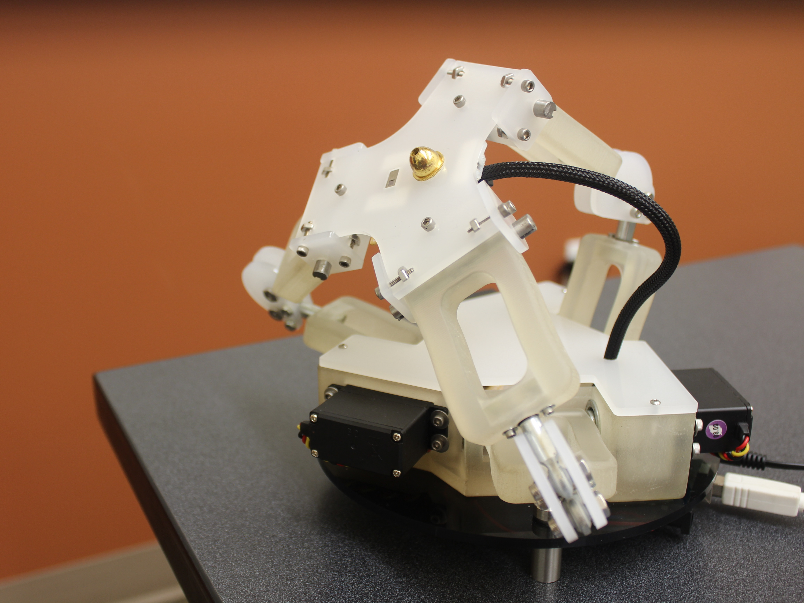
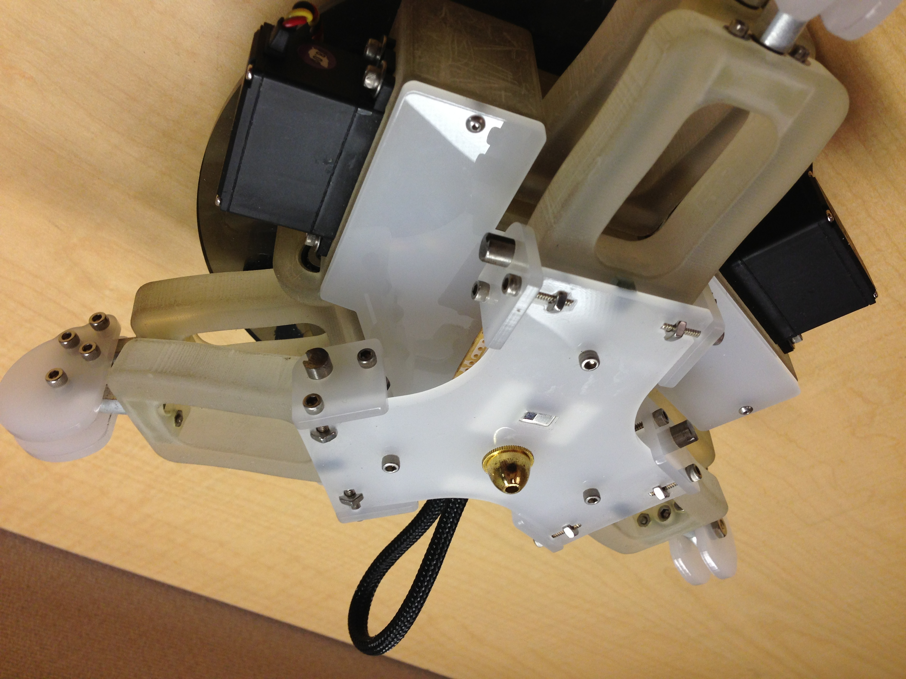
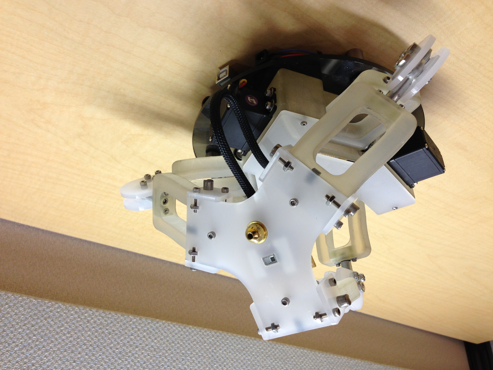
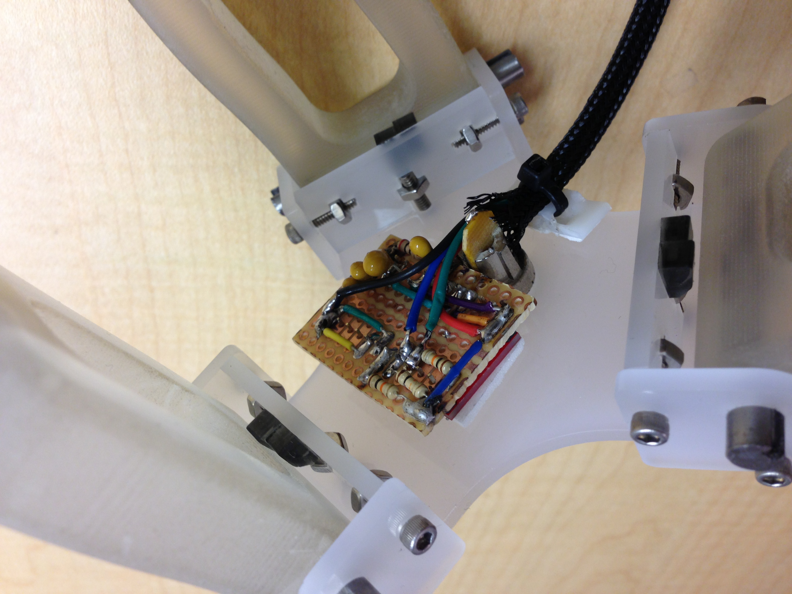
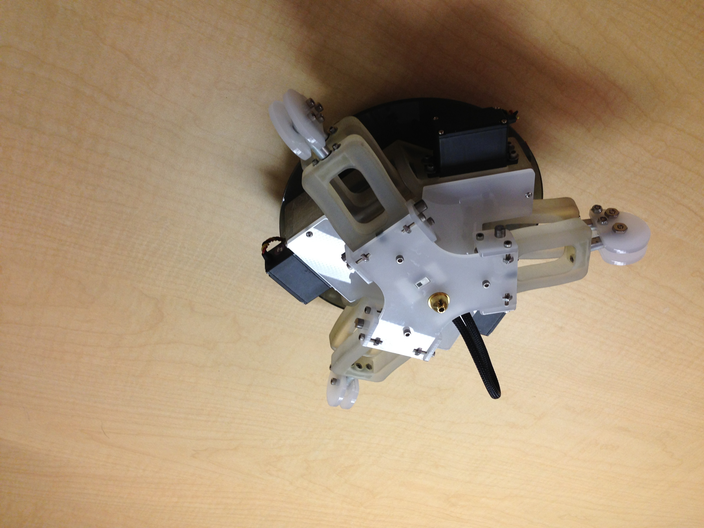
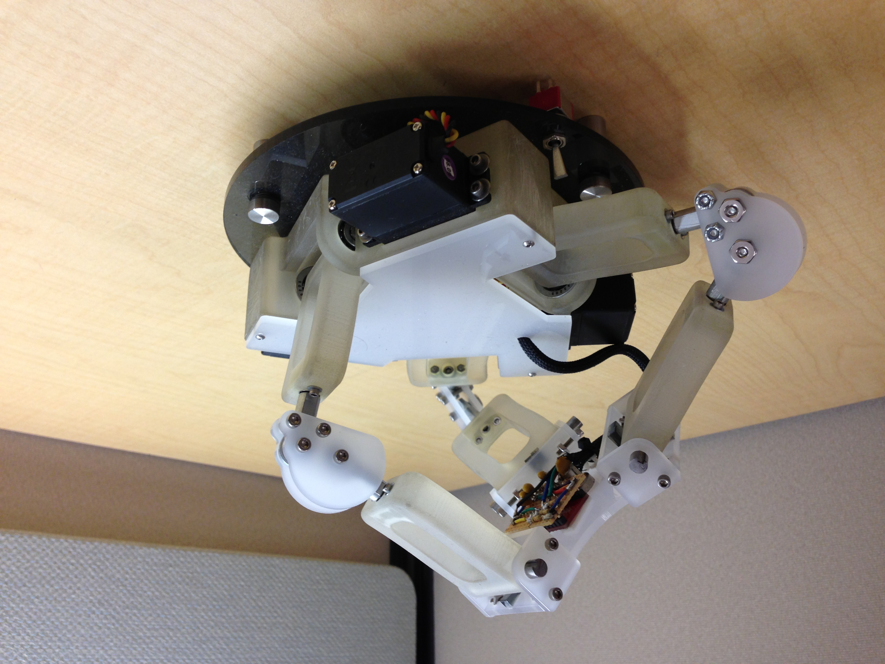
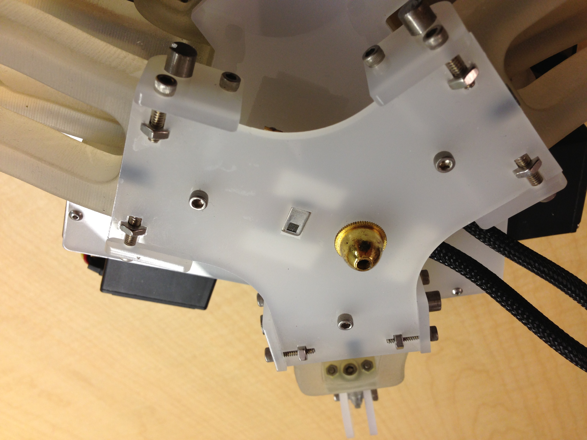

Canny
Heat trackingbot for Panasonic
Canny is a robot that uses Panasonic's Grid-Eye sensor to continually track a heat source. Panasonic developed this IR sensor and asked us to develop a device that could track a human's heat signature for applications such as video call camera tracking, indoor survailance, and in vehicle directional climate control. My team quickly came up with the solution of mounting 2 servos together to create a 2 DOF turret but because we had so much time and money left over I decided to create this robot in addition. Canny is an example of a canfield joint originally developed by NASA for directional rocket thrust control, and her advantage is that she continually track 360 degrees without the servo wires ever getting tangled. I've always liked complex linkages that move in interesting ways so this project was a lot of fun for me. Completed Spring of 2013.






